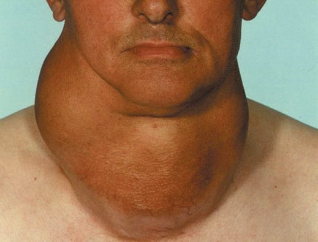
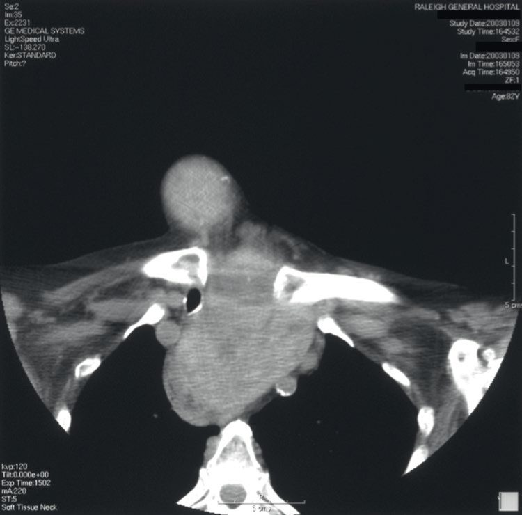
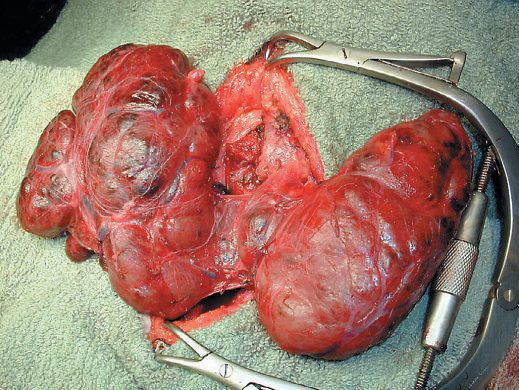

Thyroid Nodules and Goitre
Summary
- Goitre is generalised enlargement of the thyroid gland, while a thyroid nodule is a discrete swelling within it; both are common, most patients are euthyroid, and the principal clinical concern is excluding malignancy [1][2].
- In the UK, 15–40% of people have a palpable goitre and up to half have one detectable by ultrasound, while palpable thyroid nodules occur in 3–5% of the adult population, rising to 19–68% when incidental nodules on high-resolution imaging are included [2][3].
- Assessment is built around ultrasound risk-stratification and fine-needle aspiration cytology (FNAC), reported using standardised systems such as Thy1–5 or the Bethesda System [1][3].
- The great majority of thyroid nodules require no operation at all; the three reasons to operate are concern for malignancy, hyperfunction, and local compressive symptoms [3].
- UK practice in benign thyroid enlargement is governed by NICE NG145, which covers investigation, management and monitoring of thyroid disease including thyroid enlargement with normal thyroid function [4].
- Referral for suspected cancer sits in NG12 [5], and two HealthTech guidances cover thermal ablation of benign nodules [6][7].
- NG145 diverges from the textbook account in two ways that matter to a UK trainee, both set out below: it declines to recommend TSH-suppressive levothyroxine for goitre at all, and it sets a positive instruction not to treat asymptomatic non-malignant enlargement [4].
Definition
- Goitre (Latin guttur = the throat) describes generalised enlargement of the thyroid gland [1][2].
- A discrete swelling in one lobe with no palpable abnormality elsewhere is an isolated (or solitary) nodule; a discrete swelling with evidence of abnormality elsewhere in the gland is termed dominant [1].
- A nontoxic goitre is any benign, non-inflammatory enlargement of the thyroid that is not associated with hyperthyroidism, and its causes divide broadly into diffuse and nodular enlargement, giving the two entities of endemic/diffuse goitre and sporadic multinodular goitre, each with its own pathogenesis and management [3].
- Strictly, endemic goitre is goitre occurring in more than 10% of a given population; because the only known cause of it is dietary iodine deficiency, which produces diffuse follicular hyperplasia, the terms endemic goitre and diffuse goitre have become functionally synonymous [3].
- Goitre can also be classified by epidemiology (endemic, sporadic, familial, drug-induced), morphology (diffuse or nodular), functional status (toxic, non-toxic, hypothyroid) and location (cervical or retrosternal) [2].
Substernal (retrosternal) goitre
Substernal goitre is defined broadly as a goitre with a significant proportion of the gland extending inferiorly through the thoracic inlet into the mediastinum; its incidence is about 0.02% of the general population, and 60% of cases occur in patients over 60 years of age [3]. Three subtypes are described: the commonest extends into the anterior mediastinum; the second extends posteriorly to the great vessels, trachea and/or recurrent laryngeal nerve, sometimes crossing to the contralateral neck; and the third and least common is an isolated mediastinal goitre with no connection to the orthotopic cervical gland and its own blood supply from the chest [3].
Pathophysiology
- Simple goitre develops from stimulation of the thyroid by TSH, either from a rare pituitary microadenoma or, more commonly, in response to chronically low circulating thyroid hormone; the most important factor in endemic goitre is dietary iodine deficiency, while defective hormone synthesis (dyshormonogenesis) accounts for many sporadic goitres [1].
- TSH is not the only stimulus to follicular cell proliferation, other growth factors, including immunoglobulins, also act, and heterogeneous nodularity may reflect clones of cells especially sensitive to growth stimulation [1].
- The natural history of simple goitre progresses through stages: persistent stimulation causes diffuse hyperplasia (reversible if stimulation ceases); fluctuating stimulation then produces a mixed pattern of active and inactive lobules; active lobules become hyperplastic and vascular until haemorrhage causes central necrosis; necrotic lobules coalesce into colloid-filled or inactive nodules; repetition of this process produces a multinodular goitre in which most nodules are inactive and active follicles persist only in internodular tissue [1].
- Browse's describes the same sequence more compactly: an initial diffuse thyroid hyperplasia (hyperplastic goitre) may progress through areas of focal hyperplasia combined with necrosis, haemorrhage and scarring to the development of nodules [8].
- A nodular goitre is the result of a disorganised response of the gland to stimulation and therefore contains areas of both hyperplasia and hypoplasia; nodules coalesce, rupture and fibrose, and it is this that makes the process irreversible, the cut surface shows nodules with haemorrhagic necrotic centres separated by normal tissue [8].
- Growth can be anterior, superior, posterior or inferior into the superior mediastinum, or a combination, so a large goitre may be clinically obvious or clinically 'hidden' [8].
The mechanics of substernal goitre explain why it behaves differently from a cervical one. Mediastinal extension pushes against and compresses the thoracic inlet structures within a fixed bony space bound by the ribs and vertebrae, and because ventilatory flow falls steeply as tracheal diameter narrows (Poiseuille's law), minor further enlargement can produce a dramatic reduction in airflow over a short period; a purely cervical goitre, by contrast, is often capable of dramatic growth without compressive symptoms because the surrounding cervical soft tissues expand [3].
Clinical features
- Most thyroid swellings grow slowly and painlessly and are noticed incidentally; a lump present for years may suddenly change, e.g. from haemorrhage into a necrotic nodule, fast-growing carcinoma or subacute thyroiditis [8].
- Slow-growing thyroid cancers can sit as a static lump for several years before metastasis or local growth occurs, so the length of time a lump has been present is not a clear indication of its underlying nature [8].
- All thyroid swellings ascend on swallowing [1][8].
- Large swellings may cause a tugging sensation on swallowing rather than true dysphagia, since the oesophagus is a muscular tube easily stretched and pushed aside, and the discomfort arises because the thyroid must be pulled upwards with the trachea in the first stage of deglutition [8].
- An early symptom of tracheal impingement is a cough, frequently at night; deviation or compression of the trachea causes dyspnoea that is worse on neck flexion or lying down, and the whistling sound of air rushing through a narrowed trachea is stridor [8].
Pain is not a common feature of thyroid swellings: acute and subacute thyroiditis can present with a painful gland, Hashimoto's disease often causes an uncomfortable ache, and thyroid carcinoma can rarely cause local pain and pain referred to the ear if it infiltrates surrounding structures [8]. Hoarseness in a patient with a neck lump is a very significant symptom because it may result from paralysis of a recurrent laryngeal nerve, which implies that the lump is malignant and infiltrating the nerve [8].
- The WHO clinically grades goitre as 0 (not visible or palpable), 1 (palpable), 2 (visible) and 3 (large and visible from a distance) [2].
- Sporadic multinodular goitre (MNG) is the commonest UK presentation, usually an asymptomatic neck mass; compressive symptoms include dysphagia (oesophagus), stridor (trachea), and distended neck veins with facial plethora (venous obstruction) [2]. 'Red flag' features suggesting cancer include rapid growth, hoarse voice, lymphadenopathy, dysphonia, weight loss and signs of metastatic disease [2].
- Several clinical findings raise the suspicion of thyroid cancer in a nodule: age under 20 or over 70 years, male sex, locally compressive or infiltrative symptoms such as hoarseness or dysphagia, a firm or immobile nodule, nodules larger than 3 to 4 cm, cervical lymphadenopathy, a history of neck irradiation, and thyroid cancer in a first-degree relative [3].

Examination of the thyroid gland
- Assessment runs on two tracks at once (the nature of any thyroid enlargement, and the endocrine activity of the gland) and it is best to assess both together [8].
- Confirm that the swelling is thyroid by watching it move when the patient swallows, giving a sip of water if needed [8].
- Then ask the patient to open the mouth and protrude the tongue: if the lump moves up with the tongue it is attached to the hyoid bone and is likely a thyroglossal cyst [8].
- The neck veins will be distended if a mass is obstructing the thoracic inlet, and raising both arms above the head may cause venous compression at the inlet with facial redness, Pemberton's sign [8].
- Inspect the position of the thyroid cartilage for deviation, then look at the whole patient for the distribution of wasting or excess weight, for whether they are under-clothed and sweaty or wrapped up and still cold, and for whether they sit composed or fidget nervously [8].
- Palpation from the front confirms the visual impression of size, shape, surface and tenderness, and is used to check the position of the trachea with two fingertips in the suprasternal notch; where a thyroid mass extends below the notch and obscures the trachea, the thyroid cartilage must be examined instead, since a displacing mass tilts it laterally [8]. The most important part of palpation is done from behind.
- Stand behind the patient, place the thumbs on the ligamentum nuchae and tilt the head slightly forwards to relax the anterior neck muscles, letting the palmar surfaces of the fingers rest on the lateral lobes; a small lobe is made more prominent by pressing firmly on the opposite side of the neck [8].
- Ask the patient to swallow while palpating: this confirms the swelling is thyroid and lifts retrosternal lumps into reach of the fingers [8].
- It is important to assess whether the lower border of the thyroid can be felt on swallowing, or whether significant retrosternal extension remains [8].
- Percussion along the clavicles, sternum and upper chest wall defines the lower extent of a swelling below the suprasternal notch, but is not an especially reliable assessment of retrosternal extent, inability to get below the thyroid on swallowing is the better clinical indicator [8].
- Auscultate over the swelling: thyrotoxic and vascular glands may have a systolic bruit [8].
- Finally palpate the cervical and supraclavicular nodes, and describe location, tenderness, shape, size, surface and consistency of both gland and nodes [8].
Hyperplastic goitre versus multinodular goitre
| Feature | Hyperplastic goitre | Multinodular goitre |
|---|---|---|
| Typical age | Childhood in endemic areas; puberty, pregnancy, illness in sporadic cases | 15–30 years in endemic areas; 25–40 years in sporadic cases |
| Sex ratio | Five times more common in females | Six times more common in females |
| Shape | Follows the configuration of the gland, two lobes and isthmus | Asymmetrical; the gland can become any shape |
| Surface | Smooth, becoming bosselated then nodular | Smooth but nodular; often only a 'dominant nodule' is palpable |
| Consistency | Firm | Variable: some nodules hard, some soft |
| Bruit | Hyperaemic physiological goitres may have a very soft systolic bruit | None should be present |
| Tenderness | Not tender | Tender only after recent haemorrhage into a nodule |
| Endocrine state | Usually euthyroid | Majority euthyroid; secondary thyrotoxicosis (Plummer's syndrome) can develop |
- Table reformats the comparative examination findings for the two commonest forms of simple goitre [8].
- Two riders attach to the multinodular column.
- Long-standing goitres can develop secondary thyrotoxicosis, typically in the elderly and sometimes triggered by administration of iodine-containing contrast, and toxic multinodular goitre is the commonest cause of thyrotoxicosis in those over 60 years of age [8].
- Bilateral nodules may compress the trachea into a narrow slit, causing dyspnoea and stridor exacerbated by neck flexion, while large unilateral nodules push the trachea laterally and tilt the 'keel' of the larynx away from the midline [8].
On examination in simple goitre, nodules are smooth, usually firm and not hard, and the goitre is painless and moves freely on swallowing; hardness and irregularity from calcification may simulate carcinoma, and a painful nodule or sudden enlargement raises suspicion of carcinoma but is usually haemorrhage into a simple nodule [1].
The solitary nodule
- Although only one nodule may be palpable, many patients presenting with a solitary nodule in fact have a multinodular goitre, a clinically dominant nodule in a macroscopically multinodular gland [8].
- The causes of an apparently solitary nodule are a dominant nodule of a multinodular goitre, haemorrhage into a nodule, a cyst, an adenoma, a carcinoma (papillary, follicular or medullary), or enlargement of the whole of one lobe, usually from Hashimoto's disease [8].
- There is an old saying that solid lumps in the thyroid feel cystic whereas cystic lumps feel solid, and it is not possible to confirm the pathological nature of a solitary nodule by clinical examination; although the majority are benign, they must all be investigated, and within a multinodular thyroid the clinically dominant nodule may not be the suspicious one on further evaluation [8].
Etiology
- The daily iodine requirement is about 0.1–0.15 mg; endemic goitre occurs in low-iodide regions such as the Rocky Mountains, Alps, Andes, Himalayas, and parts of Derbyshire and Yorkshire in the UK, and in lowland areas with iodine-poor soil or water [1].
- Calcium is also goitrogenic and goitre is common on chalk or limestone soils [1].
- Enzyme deficiencies (dyshormonogenesis) cause many sporadic goitres, often with a family history; environmental iodine intake can compensate or worsen a metabolic predisposition [1].
- Known goitrogens include brassica vegetables (cabbage, kale, rape, thiocyanate), para-aminosalicylic acid, and antithyroid drugs (carbimazole, thiouracil), which interfere with iodide trapping or organification; paradoxically, excess iodide is also goitrogenic (iodide goitre) [1].
Browse's groups the causes of hyperplastic and multinodular goitre into five: iodine deficiency, which still occurs in certain geographic areas such as central Africa and central Asia and has been reduced by iodination of salt; physiological demand, usually a transient diffuse hyperplasia during puberty and pregnancy; goitrogens, both dietary (cassava and cabbage, especially when combined with iodine deficiency) and medicinal (amiodarone, lithium); defects in the thyroid hormone synthesis pathway, at many identified steps such as impaired iodine transport; and genetic mutations, such as PDS gene mutations causing Pendred's syndrome, in which childhood deafness is followed by multinodular goitre in 75% of cases [8].
- In the developed world the most common causes of goitre and hypothyroidism are autoimmune thyroiditis and iatrogenic causes (thyroidectomy or radioactive iodine without adequate replacement), while iodine deficiency dominates in the developing world [3].
- More than 2 billion people worldwide are exposed to iodine-deficient diets; in iodine-deficient populations a palpable goitre can be detected in up to 40% to 90% of individuals and hypothyroidism in up to 50%, with risk rising in proportion to the severity of the deficiency and a female preponderance of two to three times [3].
- The morbidity and mortality of endemic goitre arise from chronic untreated hypothyroidism and cretinism at least as much as from the local effects of size, and iodine supplementation is an effective population strategy [3].
- Sporadic multinodular goitre is the commonest cause of nontoxic goitre in iodine-replete developed nations, with an incidence of approximately 5%, and its incidence rises with age [3].
- The ABSITE Review notes the most identifiable cause of goitre is iodine deficiency (treated with iodine replacement), while the most common cause in the U.S. is low-grade TSH stimulation producing nontoxic colloid goitre [9].
Diagnosis
- Essential investigations are serum TSH (with T3/T4 if abnormal), thyroid autoantibodies, and FNAC of palpable discrete swellings; optional tests include corrected serum calcium, serum calcitonin, and imaging (chest radiograph/thoracic inlet for retrosternal extension, ultrasound/CT/MRI for known cancer or retrosternal goitre, isotope scan if toxicity and nodularity coexist) [1].
- About 70% of discrete thyroid swellings are clinically isolated and 30% dominant; some 15% of isolated swellings prove malignant and a further 30–40% are follicular adenomas [1].
- Isotope scanning is now reserved for the toxic patient with a nodule or nodularity, differentiating a toxic nodule (suppressed remainder of gland) from toxic multinodular goitre (multiple areas of uptake) [1].
- Cold nodules on scan are more likely malignant than hot nodules, although the majority (80%) of 'cold' swellings are still benign and around 5% of 'warm'/functioning swellings prove malignant [1][9].
Ultrasound
- Ultrasonography is the surgeon's workhorse investigation, assessing gland substance, regional lymphatics and nodule features (number, size, shape, margins, vascularity, microcalcification) that predict malignancy risk, and allowing image-guided FNA [1][3].
- Its advantages are portability, absence of ionising radiation, and cost-effectiveness in both initial evaluation and longer-term management, and in selected patients it can even assess vocal cord function non-invasively [3].
- Because the modality is operator-dependent, a minimum documented dataset is required in every examination: parenchymal pattern and overall gland size; the presence, size, location and characteristics of any nodules; and the presence or absence, size, location and characteristics of any suspicious cervical nodes, with particular attention to the pretracheal and paratracheal nodes of the central neck and mediastinum (levels VI and VII) and the lateral jugular chain (levels IIa/IIb, III, IV and Vb) [3].
- The sonographic features conferring the highest risk of malignancy (specifically of papillary carcinoma) are microcalcifications, hypoechogenicity, irregular margins and a taller-than-wide shape; intranodular vascularity, historically regarded as predictive, correlates better with follicular than papillary cancer, and a spongiform or purely cystic appearance dramatically lowers risk [3].
- No single feature is reliable in isolation, which is why graduated risk-stratification systems combining them have been developed [3].
- For a patient with both hyperthyroidism and nodules, both scintigraphy and ultrasound are recommended, to establish concordance for a possible toxic nodule and to identify other 'cold' nodules [3].
Cross-sectional imaging
Cross-sectional imaging with CT or MRI is essential for assessing and planning surgery in substernal goitre, and is indicated for any patient with significant compressive symptoms or sonographic evidence of extension below the clavicle [3]. It defines the degree of tracheo-oesophageal deviation or compression, the laterality of the dominant substernal lobe, the inferior-most extent, anterior versus posterior pattern of extension, cross-over to the contralateral chest, and the presence of a separate intrathoracic 'rest'; unless malignancy is a concern, contrast enhancement is usually unnecessary [3].

Fine-needle aspiration cytology
- FNAC is the investigation of choice for discrete swellings and should be performed, ideally under ultrasound guidance, on all nodules not fulfilling a fully benign ultrasound classification; it reliably identifies papillary thyroid carcinoma but cannot distinguish follicular adenoma from carcinoma cytologically [1].
- Across all thyroid nodules FNA has a mean sensitivity of over 80% and a mean specificity of over 90%, and although it can technically be done without ultrasound for a palpable nodule, accuracy is superior with ultrasound assistance [3].
- It is performed with a small-gauge needle, typically 23–27 gauge, by capillary or suction technique, ideally with on-site cytopathological confirmation of specimen adequacy; the discriminatory power and extremely low complication rate of FNA have rendered larger-bore core-needle biopsy obsolete for this indication [3].
- Bailey & Love makes the same point with the reason attached: core biopsy is rarely used owing to thyroid vascularity, but may help in rapid diagnosis of widely invasive disease such as anaplastic carcinoma [1].
- Importantly, FNA should only be performed if the result would influence management, it is not required for a small or moderate nodule in a patient of extreme age or prohibitive surgical risk, nor in a patient without other concerning features who is already proceeding to thyroidectomy [3].
- Over 30% of clinically isolated swellings are cystic on FNAC/ultrasound; about 55% of cystic swellings result from colloid degeneration, while 10–15% of cystic follicular swellings are histologically malignant (30% in men, 10% in women) [1].
- An asymptomatic thyroid nodule should undergo ultrasound-guided FNA plus thyroid function tests, and FNA is diagnostic in about 80% of cases [9].
- Flexible laryngoscopy is used preoperatively to assess vocal cord mobility, as a unilateral cord palsy with an ipsilateral nodule of concern is usually diagnostic of malignancy [1].
Molecular testing of indeterminate cytology
- Benign (Bethesda II) and malignant (Bethesda VI) cytology are highly accurate, with an error rate under 3%; the indeterminate categories carry a cancer risk of roughly 6% to 40%, and it is these that molecular testing targets, in order to reduce the number of diagnostic thyroidectomies performed on nodules that prove benign [3].
- The two most prominent commercial assays are Afirma and ThyroSeq [3].
- The Afirma Genomic Sequence Classifier, evaluated in a multi-institutional blinded validation study of 191 cytology samples from 183 patients, showed sensitivity 91%, specificity 68%, negative predictive value 96% and positive predictive value 47% for Bethesda III and IV nodules at a 24% cancer prevalence, with oncocytic neoplasms remaining a weakness [3].
- ThyroSeq v3, assessed prospectively and blinded in 286 indeterminate samples with known surgical pathology, had sensitivity 94%, specificity 82%, negative predictive value 97% and positive predictive value 66% at a 28% cancer/NIFTP prevalence, and correctly predicted oncocytic adenomas and carcinomas in 62% and 100% of cases [3].
- Three caveats govern their use: the decision to operate may rest on factors other than cytology at all, the assays are not cheap and their cost-effectiveness is setting-specific, and patients must be counselled on the inherent uncertainty in the long-term clinical implications of the result [3].
- NG145 restricts imaging of thyroid enlargement much more tightly than the textbook workup.
- Ultrasound is offered to image palpable enlargement or focal nodularity in a person with normal thyroid function only if malignancy is suspected, and ultrasound of an incidental imaging finding is only considered if clinical factors suggest malignancy is a possibility [4].
- In thyrotoxicosis, ultrasound should only be considered in an adult who has a palpable thyroid nodule [4].
- Where NG145 does prescribe detail is in the reporting of that ultrasound.
- Decisions about whether to offer FNAC must use an established grading system for the ultrasound appearance that takes account of echogenicity, microcalcifications, border, shape in the transverse plane, internal vascularity and lymphadenopathy [4].
- The report itself must specify which grading system was used, include information on each of those features, provide an overall assessment of malignancy, confirm that both lobes were assessed, and document the assessment of cervical lymph nodes [4].
- FNAC must be performed under ultrasound guidance [4].
Referral for suspected cancer is deliberately simple, and considerably broader than the red-flag lists in the textbooks: consider a suspected cancer pathway referral for thyroid cancer in people with an unexplained thyroid lump [5]. NG145 cross-refers to NG12 rather than setting its own referral criteria [4].
Scoring and Severity
FNAC is reported using standardised terminology. The UK Royal College of Pathologists' Thy classification comprises Thy1 (non-diagnostic), Thy1c (non-diagnostic cystic), Thy2 (non-neoplastic/benign), Thy3 (follicular; subdivided into Thy3a cellular atypia and Thy3f follicular neoplasm), Thy4 (suspicious of malignancy) and Thy5 (malignant) [1][2].
The Bethesda System (2023)
| Bethesda category | Risk of malignancy (NIFTP not counted as cancer) | Risk of malignancy (NIFTP counted as cancer) | Usual management |
|---|---|---|---|
| I Nondiagnostic | 5–18% | 5–20% | Repeat FNA with ultrasound guidance |
| II Benign | 0–4% | 2–7% | Clinical and sonographic follow-up |
| III Atypia of undetermined significance | 6–24% | 13–30% | Repeat FNA, molecular testing, or lobectomy |
| IV Follicular neoplasm | 17–28% | 23–34% | Molecular testing or lobectomy |
| V Suspicious for malignancy | 58–74% | 67–83% | Near-total thyroidectomy or lobectomy |
| VI Malignant | 94–96% | 97–100% | Near-total thyroidectomy or lobectomy |
- Table reformats the 2023 Bethesda System categories with their implied risk of malignancy and recommended management [3].
- NIFTP is noninvasive follicular thyroid neoplasm with papillary-like nuclear features.
- The system was created at a National Cancer Institute State of the Science conference in 2007 to address two defects of the older three-way benign/malignant/indeterminate reporting: wide variability in pathology reporting, and inability to discriminate within the indeterminate group [3].
- Validation studies show good overall concordance between reporting patterns and malignancy rates, but there is significant variability in the risk of malignancy within each category (particularly the AUS category) which is why each institution is advised to define its own population's malignancy risk per Bethesda category by correlating cytology with surgical histopathology [3].
ATA sonographic patterns
| ATA pattern | Estimated risk of malignancy | FNA size cut-off (largest dimension) |
|---|---|---|
| High suspicion | 70–90% | FNA at ≥1 cm |
| Intermediate suspicion | 10–20% | FNA at ≥1 cm |
| Low suspicion | 5–10% | FNA at ≥1.5 cm |
| Very low suspicion | Under 3% | Consider FNA at ≥2 cm; observation also reasonable |
| Benign (purely cystic) | Under 1% | No biopsy; aspiration reasonable for symptomatic or cosmetic drainage |
- Table reformats the ATA five-tier sonographic classification with malignancy risk and biopsy thresholds [3].
- Only the high, intermediate and low suspicion categories carry definitive FNA recommendations; the two lower categories can usually be safely observed [3].
- The alternative ACR TI-RADS system stratifies nodules TR1 (benign) to TR5 (highly suspicious), but categorises differently, converting feature patterns into points across five dimensions (composition, echogenicity, shape, margin and echogenic foci) with the total determining the TR level and hence the size-based biopsy threshold [3].
- Comparative studies suggest both systems perform with high sensitivity and negative predictive value and represent a significant improvement in standardisation of ultrasound reporting [3].
- Neither system recommends routine FNA of nodules under 1 cm [3].
- This accepts the trade-off of not diagnosing every sub-centimetre cancer against the current reality of dramatic overdiagnosis of clinically insignificant papillary microcarcinomas; nodule location, lymphadenopathy, genetic or environmental risk factors, patient age and patient preference may still tip the decision to biopsy [3].
- Ultrasound elastography, which measures nodule stiffness, is not currently recommended for routine use, though it may be useful in selected cases at specialised centres [3].
The 'rule of 12' expresses malignancy risk in a thyroid swelling as a function of whether it is isolated versus dominant, solid versus cystic, and male versus female [1]. WHO clinical goitre grading (0–3, described above under Clinical features) describes severity of enlargement rather than malignancy risk [2].
NG145 requires an established ultrasound grading system but does not name one [4]. The system used in UK practice is the U grading, which runs U1 (normal) to U5 (malignant) and is set out in the UK national multidisciplinary guidelines.
| U grade | Sonographic features | Action |
|---|---|---|
| U1 normal | Normal thyroid tissue | No follow-up required |
| U2 benign | Halo; iso-echoic or mildly hyper-echoic; cystic change with or without ring-down sign; micro-cystic/spongiform; peripheral eggshell calcification; peripheral vascularity | No follow-up required; routine FNAC not recommended unless there is a high level of clinical suspicion |
| U3 indeterminate/equivocal | Homogeneous; hyper-echoic; solid with halo (follicular lesion); equivocal echogenic foci; cystic change with mixed or central vascularity | FNAC |
| U4 suspicious | Solid; hypo-echoic or very hypo-echoic; disrupted peripheral calcification; lobulated outline | FNAC |
| U5 malignant | Solid; hypo-echoic; lobulated or irregular outline; micro-calcification; globular calcification; intranodular vascularity; taller than wide; characteristic associated lymphadenopathy | FNAC |
- Table reformats the U grading of thyroid nodules [10].
- The pairing rule matters more than the individual descriptors: FNAC should be considered for all nodules with suspicious ultrasound features (U3–U5), and if a nodule is smaller than 10 mm, ultrasound-guided FNAC is not recommended unless clinically suspicious lymph nodes are also present on ultrasound [10].
- Cytological analysis and categorisation should be reported according to current British Thyroid Association guidance, which is the Thy1–Thy5 scheme [10].
Treatment and Management
- Most patients with multinodular goitre are asymptomatic and do not require operation [1].
- Small nontoxic goitres can generally be followed expectantly with periodic thyroid function testing and neck imaging [3].
- In endemic areas, goitre incidence has been strikingly reduced by iodised salt; early hyperplastic goitre may regress with thyroxine 0.15–0.2 mg daily for a few months [1].
Levothyroxine is indicated for hypothyroid goitre and may reduce size by reducing TSH drive; TSH-suppressive therapy is often employed by endocrinologists as a first-line option, particularly for smaller goitres, and large-scale trial results, though mixed, do appear to show size reduction in about 30% of patients, a benefit that has to be set against the need for lifelong suppression and the long-term effects of subclinical hyperthyroidism on the heart and bone [2][3]. Radioactive iodine (RAI, ¹³¹I) can reduce goitre size by up to 50% over a year and is an increasingly popular option where access to thyroidectomy is limited, but its effect is gradual, acute transient thyroiditis can exacerbate local symptoms, it may require repeated doses, and it is ineffective for larger goitres; late hypothyroidism is a further risk [1][2][3].
- The absolute indications for thyroidectomy in nontoxic goitre are local compressive symptoms, substernal extension (which usually presents with compressive symptoms), nodules suspicious or diagnostic for malignancy in which prolonged ultrasound surveillance would be hampered, and patient preference in an otherwise acceptable surgical candidate [3].
- Bailey & Love adds cosmesis and pressure symptoms once other causes are excluded to that list [1][2].
- More than half of benign nodules regress in size over 10 years even though the nodular stage of simple goitre is irreversible, and elderly patients with an incidentally discovered, slow-growing retrosternal goitre are often observed rather than treated prophylactically [1].
- NG145 begins from a presumption against treatment.
- Do not offer treatment to adults with non-malignant thyroid enlargement, normal thyroid function and mild or no symptoms unless they have breathing difficulty or there is clinical concern, for example because of marked airway narrowing [4].
- Untreated patients should have thyroid ultrasound and TSH repeated if malignancy or compression is subsequently suspected, and repeat testing should be considered if symptoms worsen or new symptoms such as hoarseness or shortness of breath develop [4].
- Children and young people with non-malignant enlargement and normal thyroid function should be discussed with a specialist multidisciplinary team [4].
- NG145 does not endorse TSH-suppressive levothyroxine for goitre.
- Its treatment options for an adult with normal thyroid function and compressive symptoms from a non-cystic nodule, multinodular or diffuse goitre are three, and thyroid hormone is not among them: surgery, particularly where there is marked airway narrowing; radioactive iodine ablation, if there is demonstrable radionuclide uptake; or percutaneous thermal ablation [4].
- This is a real divergence from the textbook account above, in which TSH suppression is described as a common endocrinological first-line option.
- For a cyst or predominantly cystic nodule with no vascular components causing compressive symptoms, NICE offers aspiration, with possible ethanol ablation if the cyst fluid re-accumulates [4].
- The thermal ablation option is covered by two HealthTech guidances, both at the standard arrangements tier, that is, routine practice with ordinary clinical governance, consent and audit, not research-only.
- Ultrasound-guided percutaneous radiofrequency ablation for benign thyroid nodules has evidence adequate to support its use provided standard arrangements are in place [6]; the guidance explicitly does not cover malignant nodules [6].
- Percutaneous ultrasound-guided microwave ablation for symptomatic benign nodules likewise can be used under standard arrangements, but carries four extra conditions that the radiofrequency guidance does not: patient selection by a multidisciplinary team; performance only by a clinician experienced in the procedure and specifically trained in thyroid ultrasound; assessment to exclude thyroid cancer before the procedure; and immediate availability of support to deal with airway complications [7].
- Both migrated from older interventional procedures numbers with content unchanged, IPG562 to HTG416, and IPG743 to HTG646 [6][7].
Surgeries
All thyroid operations are built from three elements: total lobectomy, isthmusectomy and subtotal lobectomy; total thyroidectomy = 2 × total lobectomy + isthmusectomy, subtotal thyroidectomy = 2 × subtotal lobectomy + isthmusectomy, near-total thyroidectomy (Dunhill procedure) = total lobectomy + isthmusectomy + subtotal lobectomy, and lobectomy = total lobectomy + isthmusectomy [1]. Sabiston defines the modern nomenclature quantitatively: total thyroidectomy excises all or nearly all of the visible gland; thyroid lobectomy (hemithyroidectomy) excises all visible thyroid on one side with the isthmus and pyramidal lobe if present; near-total thyroidectomy leaves less than 1 g of remnant at the ligament of Berry; subtotal thyroidectomy leaves 3 to 5 g and is now less commonly performed; and isthmusectomy resects only the isthmus and pyramidal lobe [3].
- Total and near-total thyroidectomy do not conserve enough tissue for normal function, so lifelong thyroid replacement is required; in two-thirds of patients with negative antithyroid antibodies, one retained lobe maintains normal function [1].
- Subtotal resection for colloid goitre risks later regrowth of the remnant, increasing the risk to the RLN and parathyroids at reoperation; in young patients total thyroidectomy is generally preferred, or lobectomy on the more affected side leaving the other lobe untouched for straightforward future lobectomy if needed [1].
- Hemithyroidectomy is feasible for largely unilateral disease and avoids long-term hypothyroidism in up to 85%; total thyroidectomy is required for bilateral disease and removes the risk of recurrence, but mandates postoperative levothyroxine [2].
- Subtotal thyroidectomy is associated with an unacceptably high long-term recurrence rate (over 50% in some studies), so total or near-total thyroidectomy is now generally preferred [3].
- Unilateral lobectomy may nevertheless suffice for a single-side dominant goitre with a relatively normal contralateral lobe, and in patients predicted to have poor adherence to daily thyroid hormone replacement [3].
- Subtotal thyroidectomy for a nontoxic colloid goitre carries a decreased risk of RLN injury compared with total thyroidectomy [9].
Preoperative preparation and laryngeal assessment
- All patients undergoing thyroidectomy should have biochemical assessment of thyroid function and appropriate imaging, particularly neck ultrasound, with FNA of nodular disease as indicated; serum calcium should be measured in patients at risk of concurrent primary hyperparathyroidism, such as those with MEN2A [3].
- Voice assessment before surgery is critical, because vocal cord dysfunction is one of the most important complications of thyroid surgery and one of the most frequent causes of medicolegal action [3].
- Laryngoscopy must be performed in patients at higher risk of cord paralysis, a history of voice change, prior relevant surgery, or thyroid cancer with a fixed mass, posteriorly extending extrathyroidal extension, or bulky metastases [3].
- Whether all patients should have it is contested: proponents point out that it confirms preoperative cord dysfunction in up to 3.5% of benign and up to 8% of malignant thyroid disease, and that cord paralysis is associated with a normal voice in up to 20% of cases; opponents note that the true incidence after a negative history and examination is closer to 0.5%, making universal laryngoscopy cost-ineffective [3].
- Transcutaneous laryngeal ultrasound is a non-invasive alternative with sensitivity 93–100% and specificity 97–100% for cord paralysis, adequate visualisation in over 74% of examinations, low cost and a rapid learning curve, though it is less reliable in older and male patients because the transducer cannot penetrate a calcified thyroid cartilage [3].
- Current AAES guidance is for non-invasive voice assessment in all patients as part of the physical examination, with selective laryngoscopy for those with voice abnormalities, prior cervical or upper chest surgery, or known cancer with posterior extrathyroidal extension or extensive nodal metastases [3].
Operative technique
Most thyroidectomies are performed under general endotracheal anaesthesia, with a neuromonitoring-specific endotracheal tube if intraoperative neuromonitoring is planned; the patient lies supine with both arms tucked, the back raised 20 degrees and the neck extended over a soft roll behind the scapulae with the head on a foam or gel ring [3]. Once the superior and inferior attachments are freed, most of the lobe can be delivered with anteromedial rotation, but retraction must be judicious, excessive force stretches the RLN at its tethering points at the ligament of Berry and the larynx and increases the risk of neuropraxic injury [3].
- The two nerves take different courses.
- The left RLN is typically deeper and more medial and runs in a straighter cephalocaudal direction along the tracheo-oesophageal groove; the right takes a more superficial and oblique course and may pass either anterior or posterior to the inferior thyroid artery [3].
- Two rules of thumb locate it: it lies within 1 cm anteromedial to the superior parathyroid gland at the level where it crosses the inferior thyroid artery, and its course through the ligament of Berry is just underneath and medial to the tubercle of Zuckerkandl [3].
- No substantial structure in this area should be divided until the RLN, the inferior thyroid artery and the parathyroid blood supply have been dissected and confidently identified [3].
- At the ligament of Berry the nerve may run under, within, or even anterior to the ligament, and it is occasionally appropriate to leave a tiny amount of thyroid tissue in the interest of protecting it [3].
- For a unilateral lobectomy the isthmus is divided lateral to the midline, to minimise the risk of subsequent hypertrophy of the remaining gland; the pyramidal lobe, present in up to 80% of patients, must be dissected until thyroid tissue tapers into a fibrous band before division [3].
- The specimen is oriented with sutures and checked for inadvertently removed parathyroid tissue before being sent for pathology [3].
- Meticulous haemostasis precedes closure; the straps are reapproximated with a small opening left in the lower midline so that any blood can escape the deep resection bed into the superficial planes rather than compressing the airway, and no drain is required in the majority of cases [3].
- The arterial supply is worth restating because it explains two of the classic nerve injuries.
- The superior thyroid arteries arise from the external carotid arteries and the inferior thyroid arteries from the thyrocervical trunk, with a thyroid ima artery arising directly from the aorta or innominate artery in 1% to 4% of cases [11].
- The RLN courses in the tracheo-oesophageal groove after leaving the vagus at the level of the aortic arch, and as it ascends it may branch and may pass anterior or posterior to, or interdigitate with, branches of the inferior thyroid artery, so its location must be confirmed before that artery is divided [11].
- The external branch of the superior laryngeal nerve lies on the inferior pharyngeal constrictor and descends alongside the superior thyroid vessels before innervating cricothyroid, which is why the superior pole vessels should not be ligated en masse but divided individually low on the gland [11].
Adjunctive technology
- Energy sealing devices clamp vessels and apply bipolar radiofrequency or ultrasonic energy to fuse the tissue; meta-analyses show outcomes equivalent to clamp-and-tie for operative blood loss and postoperative neck haematoma, with improved operative times, but the radial spread of thermal energy means care is needed near the RLN and parathyroids [3].
- Topical haemostatic agents improve drain output and length of stay compared with conventional haemostasis but do not significantly reduce haematoma formation [3].
- Intraoperative neuromonitoring uses stimulator probes on the vagus or RLN with contact electrodes on the endotracheal tube; the 2018 International Neural Monitoring Study Group protocol has three steps, initial vagal stimulation to confirm intact function and electrode position, visual identification and direct stimulation of the RLN during lobectomy, and final reconfirmation by vagal stimulation after lobectomy is complete [3].
- Its benefit remains contested: historical systematic reviews failed to show a significant reduction in RLN injury, though more recent data suggest an independent association with reduced short- and long-term vocal cord dysfunction, and proponents cite reoperative surgery, malignancy, thyrotoxicosis and substernal goitre as the scenarios where it earns its place [3].
- Parathyroid tissue autofluoresces in the near-infrared when exposed to a 285 nm laser and can be located in 76% to 100% of cases, but penetration is limited to a few millimetres, images are subtle and subjective with false positives from brown fat and metastatic nodes, and visible light must be minimised for detection [3].
The retrosternal gland
- The vast majority (over 95%) of retrosternal goitres can be removed transcervically; a longer incision, mobilisation of sternomastoid from strap muscles, and division of ligamentous tissue between the clavicular sternal heads may aid delivery of the gland [1].
- Conversion to sternotomy is more likely with malignant disease, revision surgery, posterior mediastinal extension, or when goitre diameter exceeds the thoracic inlet [1].
- Sabiston frames the same decision radiologically: most substernal goitres are anterior and extend no lower than the superior aspect of the aortic arch on cross-sectional imaging, and can be retrieved by cervicotomy with proper neck extension and positioning, whereas goitres extending below the arch, extending posteriorly, or crossing the midline from the dominant side may require a sternal split or partial or total median sternotomy, with thoracic surgical assistance useful in the more difficult cases [3].
- If the gland is fixed, immobile, or too large to deliver through a cervical approach, midline sternotomy is performed [1].

- The textbook statement that sternotomy is rarely needed is quantified by the UK national registry.
- Across 5,160 retrosternal goitres in the 2016–2020 UKRETS dataset, sternal split or thoracotomy was required in 2.6% overall, but the rate is driven almost entirely by how far the gland descends: 0.8% (95% CI 0.5–1.2%) for retroclavicular goitre, 1.6% (95% CI 1.0–2.5%) when the goitre reaches the upper border of the aortic arch, and 22.9% (95% CI 18.8–27.5%) when it extends below the aortic arch [12].
- The aortic arch is therefore not merely a descriptive landmark on the CT report, it is the threshold at which the probability of needing the chest opened rises roughly fifteenfold, and it is the single most useful number to have when consenting a patient with a retrosternal goitre.
Complications
- Tracheal obstruction may occur from gross lateral displacement or compression by retrosternal extension of a goitre, and acute respiratory obstruction may follow haemorrhage into a nodule impacted in the thoracic inlet [1].
- Transient secondary thyrotoxicosis occurs in up to 30% of goitre patients [1].
- Vocal cord paralysis from RLN compression by a substernal goitre is extremely rare, and vocal cord dysfunction in this setting should instead raise concern for malignancy harboured within the goitre [3].
Thyroidectomy has three major complications: vocal cord paralysis from RLN injury, hypoparathyroidism, and postoperative neck haematoma [3].
| Complication | Reported rate | Notes |
|---|---|---|
| Temporary RLN injury | 4–10% | Up to fourfold higher in children |
| Permanent RLN injury | 0.5–2% | Risk factors: low surgeon volume, reoperative surgery, more extensive surgery for malignancy, Graves' disease, large substernal goitre |
| EBSLN injury | 2.5–28% | Wide range because laryngoscopy is often normal and diagnosis may need electromyography |
| Temporary hypoparathyroidism | 5–15% | Most resolve within 6 months |
| Permanent hypoparathyroidism | 1–3% | Risk factors: bilateral exploration, extensive central neck dissection, reoperation, Graves' disease, paediatric patients |
| Postoperative neck haematoma | 0.1–1.1% | Risk factors: male sex, advanced age, bilateral operation, Graves' disease, anticoagulants |
- Table reformats the complication rates of thyroidectomy [3].
- Unilateral RLN injury produces a spectrum of voice and swallowing problems because the nerve carries mixed motor and sensory fibres (hoarse and breathy voice, vocal fatigue, dysphagia and aspiration) while bilateral injury leaves both cords in the midline and can compromise the airway, potentially requiring temporary or permanent tracheostomy [3].
- Injury to the external branch of the superior laryngeal nerve denervates the cricothyroid and causes vocal fatigue, loss of high pitch and loss of the ability to project the voice [3][11].
Hypoparathyroidism is the most common complication of thyroid surgery; the parathyroid blood supply is extremely delicate and easily injured, so meticulous dissection and preservation are critical [3]. Every thyroidectomy specimen should be checked for inadvertently resected parathyroid tissue, and if present and confirmed by frozen section or intraoperative PTH aspiration, the tissue should be preserved on ice, minced and autotransplanted into the sternocleidomastoid before closure [3].
- Neck haematoma is dangerous not through blood loss but through local compression of the trachea and rapid airway compromise; it presents with pain, oozing from the incision, ecchymosis and firm swelling over the resection bed, and can progress to stridor and rapid airway collapse [3].
- The vast majority occur within the first 6 hours, 20% between 6 and 24 hours, and very few thereafter [3].
- Instruments for emergency opening of the incision must be at the bedside at all times, and if there are signs of impending airway collapse the incision is opened immediately wherever the patient is, all three layers, skin, platysma and strap muscles, must be opened for maximal decompression [3][9].
- Bilateral RLN injury may require emergency tracheostomy [9].
- An expanding neck haematoma may cause no external bleeding at all and present only as dyspnoea, which is why it (and not hypocalcaemia, or dyspnoea from pain and anxiety) is the postoperative complication that mandates immediate reopening [11].
UK registry outcomes for first-time thyroidectomy, from 2016–2020 UKRETS data, give figures a UK trainee can quote in the consent discussion, and they sit at or below the textbook ranges.
| Outcome (first-time thyroidectomy) | All | Thyroid lobectomy | Total thyroidectomy |
|---|---|---|---|
| Mortality | 0.03% (95% CI 0.01–0.06%) | Not reported separately | Not reported separately |
| Re-operation for bleeding | 1.1% (95% CI 0.9–1.2%) | 0.8% (95% CI 0.7–1.0%) | 1.5% (95% CI 1.3–1.8%) |
| Post-operative hypocalcaemia | 7.8% (95% CI 7.5–8.1%) | 0.6% (95% CI 0.5–0.8%) | 18.3% (95% CI 17.5–19.0%) |
| Late hypocalcaemia | 3.2% (95% CI 3.0–3.4%) | 0.8% (95% CI 0.6–0.9%) | 6.0% (95% CI 5.5–6.5%) |
| Voice change | 7.3% (95% CI 7.0–7.6%) | 5.9% (95% CI 5.5–6.3%) | 9.7% (95% CI 9.1–10.4%) |
| Persistent RLN palsy | 1.8% (95% CI 1.6–2.0%) | 1.2% (95% CI 1.0–1.4%) | 2.8% (95% CI 2.3–3.3%) |
| General post-operative complications | 2.8% (95% CI 2.6–3.0%) | 2.3% | 3.5% (95% CI 3.2–3.9%) |
| Related re-admission | 1.8% (95% CI 1.6–1.9%) | 1.1% (95% CI 0.9–1.3%) | 2.9% (95% CI 2.5–3.3%) |
- Table reformats UK national registry outcomes for first-time thyroid surgery [12].
- Three points are worth carrying.
- First, every complication is roughly two to three times more common after total thyroidectomy than after lobectomy, and for early hypocalcaemia the ratio is about thirtyfold, the strongest single argument for lobectomy where the disease permits it.
- Second, the registry's separate analysis of nerve monitoring found recurrent laryngeal nerve palsy in 3.0% of thyroidectomies, a rate of 2.1% per nerve at risk, with increasing age, re-operation, total thyroidectomy, retrosternal goitre and lymph node dissection all increasing the risk and intra-operative nerve monitoring decreasing it [12].
- Third, 15.5% (95% CI 14.9–16.1%) of patients required thyroxine after first-time thyroid lobectomy, a figure that belongs in the consent conversation, because patients are often told that lobectomy preserves function [12].
The registry also records a UKRETS analysis of post-thyroidectomy bleeding that identified male sex, increasing age, redo surgery, retrosternal goitre and total thyroidectomy as risk factors, and concluded that thyroid lobectomy in patients without those risk factors carries a very low bleeding risk, supporting day-case surgery for that group [12].
Prognosis
- Simple/multinodular goitre carries a good prognosis in most patients, who remain asymptomatic and euthyroid without needing surgery; the nodular stage is irreversible but more than half of benign nodules regress in size over 10 years [1].
- Reoperation for recurrent nodular goitre is more difficult and hazardous than primary surgery, which is why an increasing number of surgeons favour total thyroidectomy in younger patients at the outset [1].
- An increased incidence of cancer (usually follicular) has been reported from endemic goitre areas, and dominant or rapidly growing nodules in longstanding goitres should always be biopsied [1].
Surgeon volume is an established and modifiable determinant of outcome: higher-volume surgeons on average have fewer complications, shorter hospital stays and lower costs, and a study of 16,954 patients undergoing total thyroidectomy between 1998 and 2009 in the Nationwide Inpatient Sample found on restricted cubic splines analysis that outcomes improved with increasing surgeon volume up to a threshold of 26 cases per year [3]. Thyroidectomy has evolved from a historically dangerous and morbid operation into one that is generally safe and can mostly be performed in the outpatient setting; suggested criteria for outpatient thyroidectomy are that the patient lives within driving distance of the hospital, has reliable transport and adult support at home for at least 24 hours, and has no significant perioperative comorbidity or anticoagulant use [3].
References
- Bailey & Love's Short Practice of Surgery, 28th ed., Ch. 55
- Oxford Handbook of Clinical Surgery, 5th ed., Ch. 7 Endocrine surgery
- Sabiston Textbook of Surgery, 22nd ed., Ch. 73, Table 73.3
- NICE Guideline NG145: Thyroid disease — assessment and management (2019, last updated October 2023), 1.6.2; 1.9.1; 1.9.2; 1.9.3; 1.9.4; 1.9.5; 1.9.6; 1.9.7; 1.9.8; 1.9.9; 1.9.10; 1.9.11; 1.9.12 www.nice.org.uk
- NICE Guideline NG12: Suspected cancer: recognition and referral (2015, updated 2026), 1.8.5 www.nice.org.uk
- NICE HealthTech Guidance HTG416: Ultrasound-guided percutaneous radiofrequency ablation for benign thyroid nodules (2016, migrated from IPG562), 1.1; Overview www.nice.org.uk
- NICE HealthTech Guidance HTG646: Percutaneous ultrasound-guided microwave ablation for symptomatic benign thyroid nodules (2022, migrated from IPG743), 1.1; 1.2; 1.3; 1.4; 1.5; Overview www.nice.org.uk
- Browse's Introduction to the Symptoms and Signs of Surgical Disease, 6th ed., Ch. 12 The neck
- The ABSITE Review, 2022, Thyroid chapter
- Mitchell AL, Gandhi A, Scott-Coombes D, Perros P. Management of thyroid cancer: United Kingdom National Multidisciplinary Guidelines. J Laryngol Otol 2016;130(S2):S150–S160 — based on the British Thyroid Association / Royal College of Physicians Guidelines for the Management of Thyroid Cancer (3rd ed., 2014), Recommendations: investigation; Table I pmc.ncbi.nlm.nih.gov
- Schwartz's Principles of Surgery: ABSITE and Board Review, Ch. 38 Thyroid, Parathyroid, and Adrenal
- British Association of Endocrine and Thyroid Surgeons: Sixth National Audit Report 2021, United Kingdom Registry of Endocrine and Thyroid Surgery (UKRETS), data 2016–2020, Goitre and sternal split; Outcomes for first-time surgery; Re-operation for bleeding; T3 / T4; Voice change and persistent RLN palsy www.e-dendrite.com